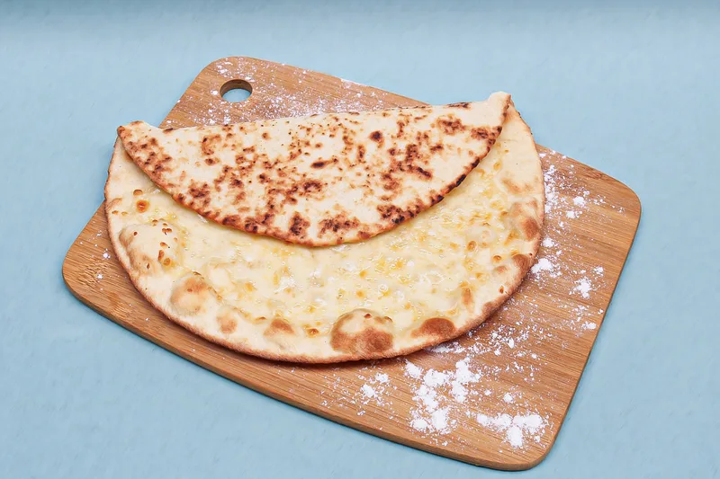
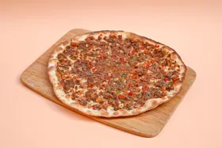
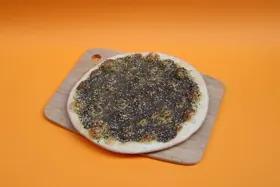
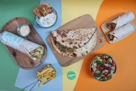
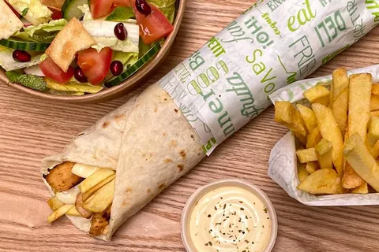

Traiteur Libanais à Lyon
Des man'ouches pour vos invités — petit-déjeuner d'équipe, pause de réunion, apéritif, anniversaire — pétries et cuites chez Sezam&Co, votre restaurant libanais à Lyon 2. De 10 à 100 pièces, le prix s'affiche en direct — remise jusqu'à −25 %.
Votre Devis Traiteur Instantané
Les cinq recettes




Vos Coordonnées
On vous répond par email ou par téléphone, en général dans la journée. Si c'est urgent, appelez-nous au 04 78 95 43 16.
Plus Vous Commandez, Moins Vous Payez
La remise est automatique, elle grimpe avec la quantité
La remise ne dépend que du nombre total de pièces, jamais de leur type : 12 Zaatar et 8 Lahmajine, c'est 20 man'ouches, donc la même remise que 20 Zaatar. Vous pouvez donc mélanger les cinq recettes sans rien perdre. Le simulateur ci-dessus applique le barème au centime et vous donne le total tout de suite.
Comment Ça Marche
Trois étapes, et vous connaissez le prix dès la première
Vous composez
Bougez les curseurs du simulateur jusqu'à votre commande. Le total, la remise et le prix par pièce s'affichent au fur et à mesure — rien à demander, rien à attendre.
Vous envoyez
Vos coordonnées, la date et l'heure souhaitées, retrait ou livraison. On vous rappelle pour confirmer le créneau — et le coût de la livraison si vous en voulez une. Rien n'est validé avant votre accord.
Vous récupérez
Au 6 rue Petit David, à Lyon 2, sur nos heures d'ouverture — 7j/7, de 12h à 23h. Vos man'ouches sont prêtes pour l'heure que vous avez donnée. Ou on vous les fait livrer aux alentours de Lyon.
Les Cinq Man'ouches du Traiteur
Nos traditionnelles, celles qui se partagent le mieux
Le traiteur, chez nous, c'est la man'ouche traditionnelle : la galette libanaise pétrie et enfournée au restaurant. Une vegan, deux végétariennes, deux à la viande de bœuf — mélangez-les comme vous voulez.
Quantités, Délais et Retrait
Tout ce qu'il faut savoir avant de commander
Le prix des man'ouches, remise comprise, est celui que vous voyez dans le simulateur : il est ferme. Seule la livraison reste à chiffrer, parce qu'elle dépend de l'adresse de destination — on vous la confirme lors de l'appel.
Froide, Tiède ou Réchauffée
La man'ouche est aussi bonne froide que tiède : quelques secondes au micro-ondes et elle retrouve son moelleux, mais rien ne vous y oblige. Vous pouvez donc la commander la veille, la récupérer le matin et la servir à midi — sans four à surveiller. Et comme elle se mange à la main, pliée en deux, ni couverts ni assiettes à prévoir.
Questions Fréquentes
Sur la commande traiteur
À partir de combien de man'ouches ?
L'offre traiteur démarre à 10 man'ouches et va jusqu'à 100. En dessous de 10, pas besoin d'un circuit particulier : passez par la commande normale, sur place ou en ligne.
Combien de man'ouches par personne ?
Comptez 1,5 man'ouche par personne — c'est le ratio qu'applique le simulateur. Au Liban, on en mange une, accompagnée de quelque chose à grignoter et d'une boisson. Descendez à 1 si vos invités ont de petits appétits, montez à 2 si la man'ouche tient lieu de repas complet.
Combien de temps à l'avance ?
Jusqu'à 20 man'ouches, comptez 24 heures. De 21 à 50, prévoyez 48 heures. Au-delà de 50, il nous faut 72 heures. Ça nous laisse le temps de préparer la pâte et d'organiser la cuisson pour l'heure que vous nous donnez.
Est-ce que vous livrez ?
Oui, la livraison est possible aux alentours de Lyon. Elle est payante : le montant dépend de l'adresse, du destinataire et de la taille de la commande. C'est le seul élément qui ne figure pas dans le simulateur — on vous le confirme avant validation. Le retrait se fait au restaurant, 6 rue Petit David à Lyon 2, sur nos heures d'ouverture — 7j/7, de 12h à 23h. Pour une commande individuelle, voyez plutôt notre page livraison de libanais à Lyon.
Combien coûte un traiteur libanais à Lyon ?
Vous le savez immédiatement : le simulateur en haut de page calcule le total pendant que vous choisissez vos quantités. Les man'ouches vont de 5,50 € (Zaatar) à 7,90 € (Lahmajine, Sojok Jebne) à l'unité, et la remise dégressive fait baisser le prix moyen à mesure que la commande grossit. Aucun devis à demander, aucune attente.
Comment marche la remise sur les grosses quantités ?
Elle est automatique et ne dépend que du nombre total de man'ouches : environ −6,3 % à 10 pièces, −12,5 % à 30, −18,8 % à 60 et −25 % à 100, qui est le maximum. Le type de man'ouche n'entre pas en compte, vous pouvez donc mélanger les cinq recettes librement. Faites glisser les curseurs du simulateur : la remise s'affiche et grimpe à chaque man'ouche ajoutée.
Quelles man'ouches sont disponibles ?
Les cinq traditionnelles : Zaatar, Zaatar Duo, Jebne, Lahmajine et Sojok Jebne. Ce sont celles qui se transportent et se partagent le mieux. Le reste de la carte est à découvrir sur la page man'ouche à Lyon.
Et les allergènes ?
Toutes nos man'ouches contiennent du gluten (pâte à pain). La Zaatar et la Zaatar Duo contiennent du sésame ; la Zaatar Duo, la Jebne et la Sojok Jebne contiennent du lait ; la Lahmajine et la Sojok Jebne contiennent du bœuf. Signalez-nous toute allergie dans le formulaire : on vous confirme la composition exacte avant de lancer la préparation.
Vous faites une facture ?
Oui. Indiquez la raison sociale et l'adresse de facturation dans le formulaire de demande : la facture vous est transmise avec la commande.
On S'occupe de Votre Commande ?
Composez-la en trente secondes, le prix s'affiche tout de suite — et si vous préférez en parler, on est au bout du fil.
Sezam&Co — 6 rue Petit David, 69002 Lyon. Ouvert 7j/7, de 12h à 23h.
Vous aimerez aussi

Man'ouche à Lyon
Les 18 recettes de notre galette libanaise, cuites minute.
Découvrir →
Notre Menu
Mezzes, man'ouches, shawarma, desserts maison.
Découvrir →
Livraison à Lyon
Pour une commande individuelle, livrée chez vous.
Découvrir →Voir aussi : nos 18 man'ouches · le menu · la livraison à Lyon